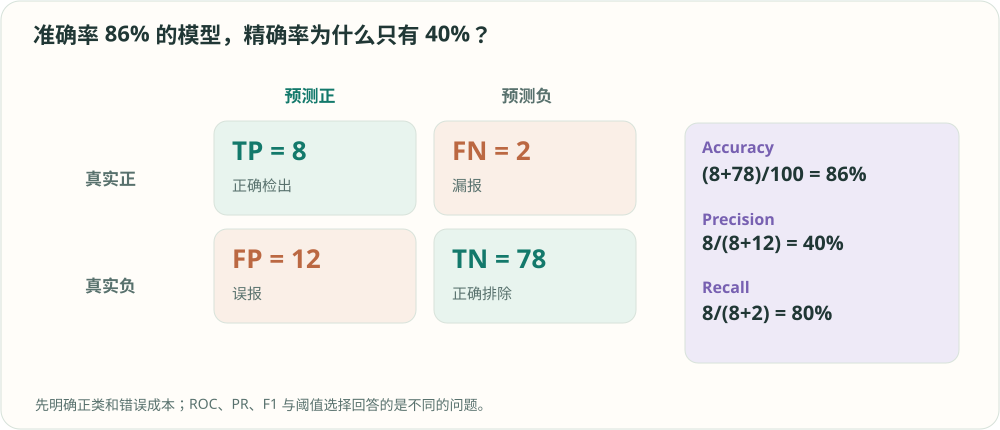
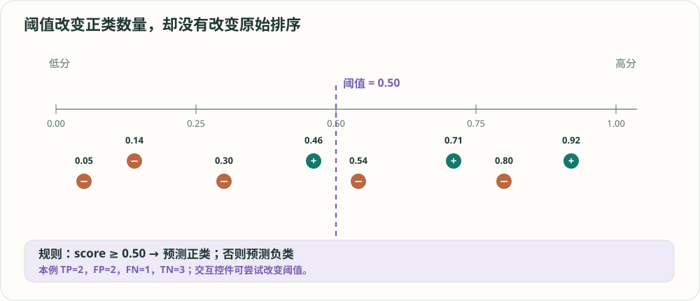
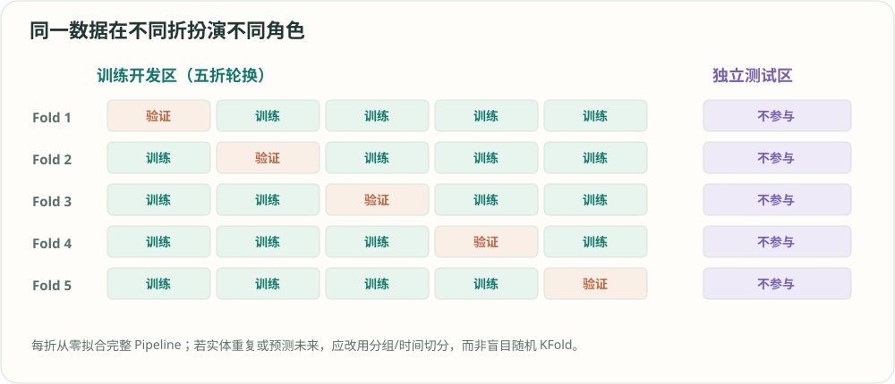

模型评估：从混淆矩阵到可信选择
同一个预测器可以拥有很高的准确率，却产生大量误报。评价必须与具体错误成本、样本分布、决策阈值和验证设计一起解释。
01 · 先明确在什么分布上衡量好坏
评价指标的第一步不是调用 metrics，而是定义目标人群、预测时点、类别含义与错误成本。假设 1000 条样本仅 10 条正例，恒定预测负例可以获得 990/1000 的 accuracy，却识别不到任何正例。对欺诈检测或罕见风险筛查，这类数值不能代表实际价值。
训练损失与部署决策成本也可能不同：模型优化对数损失产生概率分数，业务随后必须在阈值处将分数转换为“报警 / 不报警”的动作。评估分数、选择阈值、衡量成本是三个不同阶段。
02 · 四格混淆矩阵导出所有分类指标
二分类首先固定哪个类别算“正类”。真实正且预测正为 TP；真实正但预测负为 FN；真实负但预测正为 FP；真实负且预测负为 TN。用 100 个样本的教学例子：TP=8、FN=2、FP=12、TN=78，准确率为 86%，但精确率只有 40%，召回率为 80%。

Precision 回答“被我判成正类的样本有多少是真的”；Recall 回答“真实正类被我找出多少”。F1 是 precision 与 recall 的调和平均，在两者都定义且分母非零时写成 2PR/(P+R)；它对不同业务成本并不自动最优。
当预测正类数为零时 precision 不存在普通分母意义下的数值，应明确指标约定。对多分类问题还需要区分逐类别指标与 macro、micro、weighted 的平均方法，不能直接套二分类 TP、FP 的语义。
03 · 分数排序与固定阈值的关系
很多分类器先产生一个连续分数。假设系统输出 0.92、0.80、0.71 等八个分数，默认规则是分数大于等于 0.50 时预测正类。提高阈值通常会减少预测正类，从而改变 FP 与 FN 的数量，而不会改变样本原本的排名。

修改阈值会立即重新计算上面的混淆矩阵。若精确率分母为零，这里展示 N/A，不把它伪装成模型质量为零。
ROC AUC 概括不同阈值下的真阳性率与假阳性率关系，强调排序能力；PR 曲线同时展示 precision 与 recall。在正例稀少时，PR 或 average precision 通常能更直观看到“报警中到底有多少命中”，但指标仍取决于基准率与业务需求。scikit-learn 的 average_precision_score 不是简单的梯形插值 PR AUC，不能随意互换名称。
04 · 回归预测不能只看 R²
回归要对照常数基线，并说明目标单位。MAE 对每个样本的绝对误差等权求平均；RMSE 对大误差更敏感；R² = 1 − SSE/SST 将残差平方和与“预测测试目标均值”的基准方差比较，某些情况下可能小于 0。
如果同一测试集所有真实目标完全相同，SST=0，传统 R² 不按普通公式定义；某些实现会提供有限值替代约定。比较不同目标单位或不同时间分布的 RMSE 前，需要先检查定义是否一致。
05 · 交叉验证不是简单地反复试随机种子
交叉验证在开发数据内部轮流使用训练折与验证折，让模型比较不只依赖某一次划分。每一折的标准化、缺失填充、特征选择都必须只在该折训练部分 fit；把它们放在 Pipeline 中才能维持该边界。独立测试集不应该出现在 CV 循环里。

分组数据需要 GroupKFold 等按实体隔离的策略；预测未来的时间序列应考虑滚动或扩张窗口，而不是随机打乱时间。超参数搜索所用 CV 分数并不等于独立测试精度；如果要对模型选择算法本身做无偏比较，可进一步考虑嵌套交叉验证。
06 · 偏差与方差、学习曲线如何诊断
若训练和验证误差都很高，可能是模型过弱、关键特征缺失、目标噪声高或优化不足；若训练误差极低、验证误差很高，可能是复杂度、泄漏、分布差异或样本不足导致的泛化失败。这些是诊断线索，不是根据一张图便能直接推断的原因。
学习曲线以训练样本数为横轴，分别绘制训练与交叉验证分数。若更多数据有助于缩小两者差距，可以评估增量数据的价值；若两者长期都差，则应优先反思问题定义与特征表达。任何学习曲线都应标明分割策略及误差的不确定性。
07 · 一个可运行的分层交叉验证实验
以下在合成不平衡数据上比较 ROC AUC 与 average precision，并以固定 0.5 阈值输出一次独立测试的混淆矩阵。数据由 make_classification 生成，因此输出不代表任何真实领域。测试仅用于演示最终报告，阈值没有通过该测试集调优。
import numpy as np
from sklearn.datasets import make_classification
from sklearn.model_selection import train_test_split, StratifiedKFold, cross_validate
from sklearn.pipeline import make_pipeline
from sklearn.preprocessing import StandardScaler
from sklearn.linear_model import LogisticRegression
from sklearn.metrics import (confusion_matrix, roc_auc_score,
average_precision_score, precision_score, recall_score)
X, y = make_classification(n_samples=600, n_features=8,
n_informative=4, n_redundant=2, weights=[0.9, 0.1],
flip_y=0.01, random_state=7)
Xdev, Xtest, ydev, ytest = train_test_split(
X, y, test_size=0.2, stratify=y, random_state=7)
pipe = make_pipeline(StandardScaler(), LogisticRegression(max_iter=1000))
folds = StratifiedKFold(n_splits=5, shuffle=True, random_state=7)
cv = cross_validate(pipe, Xdev, ydev, cv=folds,
scoring=["roc_auc", "average_precision"])
print("CV ROC AUC:", np.round(cv["test_roc_auc"], 3))
print("CV AP:", np.round(cv["test_average_precision"], 3))
pipe.fit(Xdev, ydev)
score = pipe.predict_proba(Xtest)[:, 1]
pred = (score >= 0.5).astype(int)
cm = confusion_matrix(ytest, pred, labels=[0, 1])
print("test confusion rows true[0,1], cols pred[0,1]:", cm.tolist())
print("test ROC AUC:", roc_auc_score(ytest, score))
print("test AP:", average_precision_score(ytest, score))
print("test precision/recall:",
precision_score(ytest, pred, zero_division=0),
recall_score(ytest, pred, zero_division=0))
assert cm.sum() == len(ytest)
assert all(len(cv[k]) == 5 for k in ["test_roc_auc", "test_average_precision"])需要 Python 3.10+、NumPy、scikit-learn。小样本下各折置信区间可能较宽，CV 分数也取决于数据生成过程。模型输出 0.8 不一定代表真实事件频率恰好 80%，该问题属于概率校准，将在第 09 章展开。
08 · 评估审查和来源
交付指标前，必须记录正类含义、阈值选择策略、评价对象与数据量、验证切分方式，以及误报和漏报的实际成本；查看是否存在重复实体或数据泄漏。切勿用测试集反复挑模型、挑阈值，最后又宣称这是独立性能。